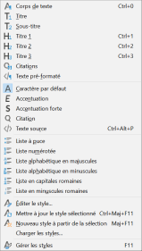

Marie doit rédiger un exposé sur différents courants musicaux ; baroque, classique et romantique.
Elle a commencé à taper son plan sur un traitement de texte.
Elle souhaite utiliser les styles afin que son document soit structuré.
Question
Elle commence par mettre ses trois titres de partie sau format Titre 1 en suivant la méthode visible ci-contre.
Décrire en français cette méthode, en utilisant un vocabulaire adapté.
Question

Dans chaque partie, elle souhaite écrire les noms des compositeurs sous la forme de liste à puces.
Le menu Styles est visible ci-contre. Après avoir sélectionné les paragraphes correspondants, quelle option doit-elle choisir ?
Question
Au vu des deux captures d'écran ci-dessous, quelle étape importante Marie a-t-elle oublié de faire ?